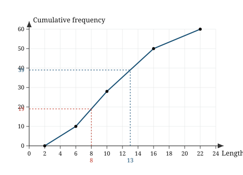

<script>if(location.hostname.endsWith('onrender.com'))location.replace('https://math-sandbox.pages.dev'+location.pathname+location.search+location.hash)</script>
<section class="theory" data-section="S1-1.4">
<h2>1.4 Representation of continuous data: cumulative frequency graphs</h2>
<p class="src">Based on Cambridge International AS &amp; A Level Mathematics: Probability &amp; Statistics 1 Coursebook (Dean Chalmers), Chapter 1 Representation of data, printed pp.13–19 (Worked example 1.4, Exercise 1C). Own wording and new numbers. Estimates of a median, quartiles or percentiles from a cumulative frequency graph are left to a later chapter, as in the book.</p>
<p class="key-words"><strong>Key words:</strong> <em>cumulative frequency</em>, <em>cumulative frequency graph</em>, <em>cumulative frequency polygon</em>, <em>cumulative frequency curve</em></p>
<p>A <strong>cumulative frequency graph</strong> can be used to represent continuous data. <strong>Cumulative frequency</strong> is the total frequency of all values less than a given value.</p>
<p>For grouped data, the graph is drawn by plotting cumulative frequencies against the <strong>upper class boundaries</strong> of the intervals. The points may be joined with straight-line segments, giving a <strong>cumulative frequency polygon</strong>, or with a smooth curve, giving a <strong>cumulative frequency curve</strong>.</p>
<p>The lowest lower class boundary is also plotted, with cumulative frequency \(0\), because no values lie below that boundary and the total up to that point is known exactly. A common mistake is to plot the running totals at the class mid-values instead; those points would only be estimates.</p>
<p>From the finished graph we can estimate the number or proportion of values that lie below a given value, above a given value, or between two values. A polygon and a curve will not, in general, give the same reading except at the plotted points. Estimates taken from a polygon match the estimates that would be obtained from a histogram for the same grouped data, because both methods assume that the values in each class are spread evenly over the class interval.</p>
<div class="worked-example">
<h4>Worked example 1: A cumulative frequency table and polygon</h4>
<p class="src">Book: Worked example 1.4, p.14; new table</p>
<p>The lengths, \(\ell\)&nbsp;cm, of \(60\) leaves from one plant are grouped as follows.</p>
<table class="freq-table">
<thead><tr><th>Length (\(\ell\) cm)</th><th>Number of leaves (\(f\))</th></tr></thead>
<tbody>
<tr><td>\(2\leqslant \ell\lt 6\)</td><td>10</td></tr>
<tr><td>\(6\leqslant \ell\lt 10\)</td><td>18</td></tr>
<tr><td>\(10\leqslant \ell\lt 16\)</td><td>22</td></tr>
<tr><td>\(16\leqslant \ell\lt 22\)</td><td>10</td></tr>
</tbody>
</table>
<p>Draw up a cumulative frequency table, and use a cumulative frequency polygon to estimate the number of leaves shorter than \(8\)&nbsp;cm and the lower boundary of the lengths of the longest \(21\) leaves.</p>
<ol class="steps">
<li>The points are plotted at the upper class boundaries, starting from the lowest lower boundary with cumulative frequency \(0\). The cumulative frequencies are \(0\) at \(2\), then \(10\), \(28\), \(50\) and \(60\) at \(6\), \(10\), \(16\) and \(22\). <span class="mark">B1</span></li>
<li>The plotted points are \((2,0)\), \((6,10)\), \((10,28)\), \((16,50)\) and \((22,60)\). On the polygon, the reading at \(8\)&nbsp;cm lies halfway from \(6\) to \(10\), so the estimate is \(10+\dfrac{1}{2}\times 18=19\) leaves. The longest \(21\) leaves are those with cumulative frequency \(60-21=39\) or more. Between \((10,28)\) and \((16,50)\), a cumulative frequency of \(39\) occurs at length \(10+\dfrac{11}{22}\times 6=13\). <span class="mark">M1 A1</span></li>
</ol>
<p></p>
<p class="final"><strong>Answer:</strong> \(19\) leaves; \(13\)&nbsp;cm</p>
</div>
<p>The addition column in a cumulative frequency table is only a running total of the frequencies. Once the table is complete, each new cumulative frequency can also be found by adding the next class frequency to the previous cumulative frequency.</p>
<p>A cumulative frequency graph can never decrease, because frequencies are never negative. The steepness of a segment reflects the frequency density in that class: a steeper rise means more values in a given width.</p>
<h3>Common mistakes</h3>
<ul>
<li>Plotting cumulative frequencies at class mid-values instead of at upper class boundaries.</li>
<li>Forgetting the starting point, at the lowest lower class boundary, with cumulative frequency \(0\).</li>
<li>Reading a curve and a polygon as if they had to give the same estimate away from the plotted points.</li>
<li>Using the frequencies themselves, rather than the cumulative frequencies, as the vertical coordinates.</li>
</ul>
<h3>Quick checks</h3>
<div class="quick-check">
<h4>Quick check 1</h4>
<p>Four classes have frequencies \(6\), \(10\), \(15\) and \(9\). What is the cumulative frequency at the upper boundary of the last class?</p>
<details><summary>Worked solution</summary>
<p>The cumulative frequency is the total of all four frequencies: \(6+10+15+9=40\).</p>
</details>
</div>
<div class="quick-check">
<h4>Quick check 2</h4>
<p>A cumulative frequency polygon passes through \((2,0)\), \((8,12)\) and \((14,30)\). Estimate the number of values less than \(11\).</p>
<details><summary>Worked solution</summary>
<p>\(11\) lies halfway from \(8\) to \(14\), so the estimate is \(12+\dfrac{1}{2}\times 18=21\).</p>
</details>
</div>
<div class="quick-check">
<h4>Quick check 3</h4>
<p>Using the same polygon as in Quick check 2, estimate the value that has cumulative frequency \(21\).</p>
<details><summary>Worked solution</summary>
<p>A cumulative frequency of \(21\) is halfway from \(12\) to \(30\), so the estimate is \(8+\dfrac{1}{2}\times 6=11\).</p>
</details>
</div>
<p class="marks-key">B marks are for a correct statement; M marks are for a correct method; A marks are for an accurate result.</p>
</section>
